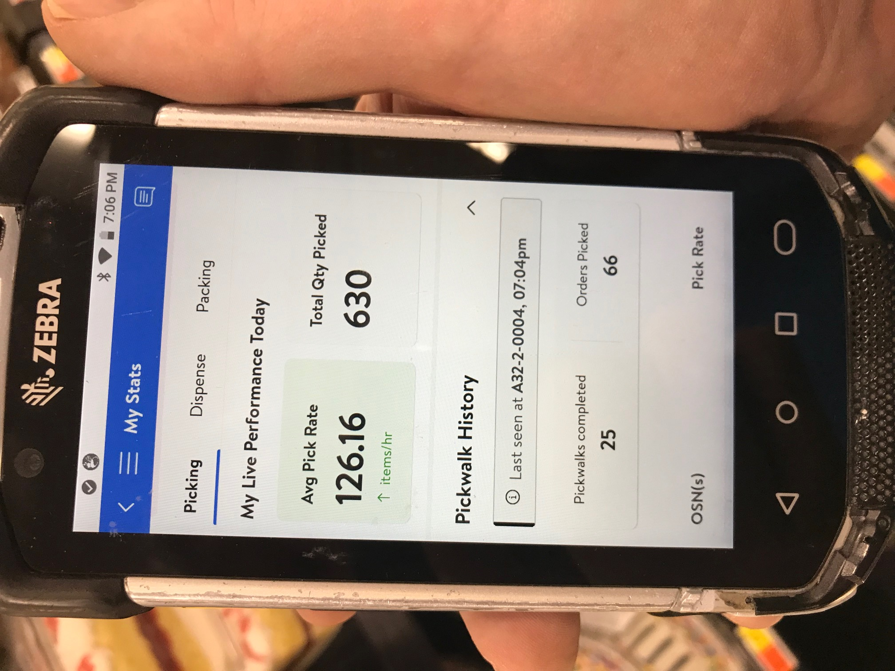

A GREAT HONOR
 In March of 2024, I won the 2nd Shift Associate of the Month Award.
In March of 2024, I won the 2nd Shift Associate of the Month Award.
From Managers VoteWalmart in Hackettstown, NJ
Store Number 2503
I worked 11am-8pm shift 
HOW CORPORATE WORK RELATES TO INSTORE WORK, AND VICE VERSA = BOTH ADVERTISING SUCCESSES
Working in a competitive corporate setting prepared me for a successful time as an Personal Online Shopper, no doubt about it. I would place items in the circular from its data bases and make that page attractive.
Now I am at store level, and I remember those items from the circular as I find them for real on the shelves of the Aisles in an actual retail store like Walmart below.

And on a typical Pick Walk at Walmart, you see the Cereal being shopped for by me as it's in Aisle A-16 Section 6 and in Modular or Space 7. (Below)

Now with the successful experiences of retail shopping for the customers at store level, it can translate back easily to a corporate enviroment. I will be able to create print and digital advertisements effectively because I saw and dealt with these items first hand when I was with ShopRite and now Walmart.
That cereal also can be found in a store circular, which I helped design in an office during past employment, to inform the customer of it's availability that week. One place or hand washes the other very nicely.
I am having great success today at Walmart as I did when I was working at ShopRite as my past corporate training has "flexed my muscles each day for victory" today at store level.
HOW AN ONLINE ORDER WORKS AT WALMART:
- The first step would be for the customer to go online using the stores website and pick out anything she or he wants to buy in the store.
- The next step would be for me to shop for those requested items and collect them in a big cart. I would transport those items to the proper place for storage within the digital department of the store.
- The last step would be to get those items to the customer, either by delivery to their home or a pick up (by above customer where they come to the store) at a set time.